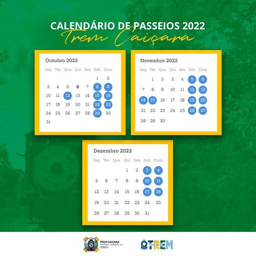

Curso EAD Excel Básico
Curso de Excel gratuito no Senai. Veja mais informações aqui
Antonina hoje na TV Paraná Turismo
Hoje (20) no programa Descubra Paraná, na @tvparanaturismo à partir das 21h
Hoje (20) no programa Descubra Paraná, na @tvparanaturismo à partir das 21h
Espetáculo “As Quatro Estações – Vivaldi”
Celebrando a chegada da primavera e a esperança nela renovada, a Mostra de Artes Circuito da Maré apresenta neste sábado (22) no Armazém Macedo
Celebrando a chegada da primavera e a esperança nela renovada, a Mostra de Artes Circuito da Maré apresenta neste sábado (22) no Armazém Macedo
CENTRO DE ATENÇÃO PSICOSSOCIAL – CAPS
O CAPS Antonina disponibiliza serviços de Psicologia, Serviço Social... VEJÁ MAIS
LIXO TEM HORA E DATA PARA DAR ADEUS
Além de sujar a cidade, colocar o lixo na rua fora de hora pode causar...VEJÁ MAIS
A Prefeitura Municipal de Antonina, em atendimento ao artigo 40
inciso 4, da Lei nº 10.257/2001 comunica a realização da... VEJÁ MAIS

Dia 14, não perca!
A caravana da Fomento Paraná está voltando a Antonina, com Créditos em condições acessíveis para você Mei e ME.

Trem Caiçara
passeios repletos de cultura, história e natureza - na Maria Fumaça mais antiga em operação no Brasil
Trem Caiçara
passeios repletos de cultura, história e natureza - na Maria Fumaça mais antiga em operação no Brasil